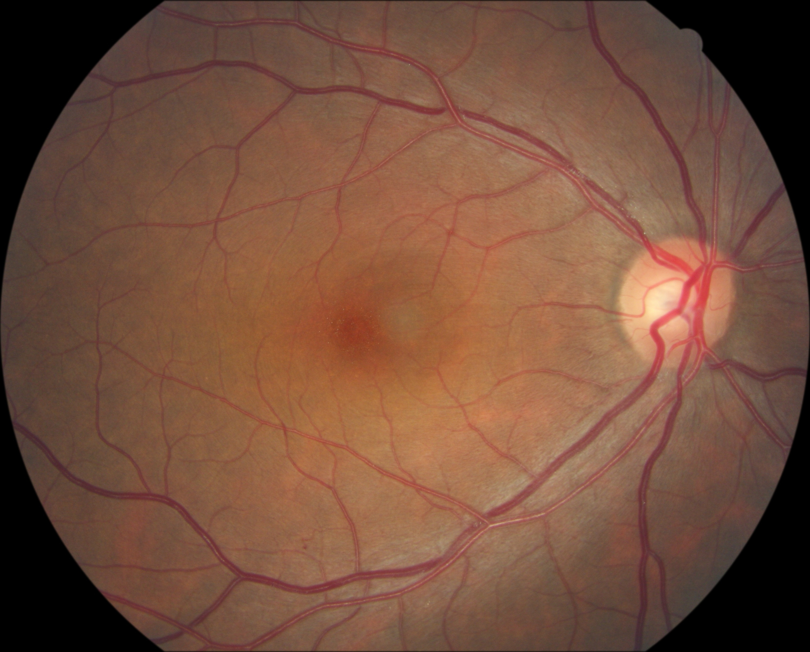

Visualization
Explore the RetSAM outputs on curated samples. Use the left thumbnails to switch between tasks, view the high-resolution overlay in the center, and inspect task-specific quantitative biomarkers on the right. The bottom strip lets you switch between different cases.

Legend
Quantitative biomarkers
Overview
RetSAM is a unified segmentation-to-quantification framework for fundus imaging that enables large-scale oculomics studies. It supports three task categories across anatomy, phenotypes, and lesions, converting multi-target segmentations into 30+ standardized biomarkers. Trained with a multi-stage strategy on private and public data, RetSAM achieves state-of-the-art performance on 17 public datasets and generalizes across populations and devices. These biomarkers support disease correlation analyses and clinical decision-making, with evidence from reader studies and a prospective trial.

Results
RetSAM generalizes across 17 public benchmarks spanning vessel, OD/OC, and lesion segmentation with strong cross-center and cross-device robustness. It delivers competitive DSC/JAC for vessels while preserving vascular topology, achieving a higher clDice than strong baselines, and reaches near state-of-the-art OD performance with minimal gaps. For OC segmentation, fine-tuned RetSAM leads on most datasets, mitigating annotation-style bias seen in linear inference. In lesion segmentation, RetSAM adapts well across benchmarks, leading on hard/soft exudates in IDRiD and DDR, and improving precision for microaneurysms by reducing over-segmentation. In a multi-task evaluation with fully annotated samples, RetSAM consistently tops competing methods across vessels, OD/OC, and lesions, showing balanced performance without task bias, and delivering sizable gains, especially in vessels.


Segmentation Tasks
RetSAM consolidates fragmented retinal segmentation objectives into a unified taxonomy so a single model can segment anatomical structures, lesions, and fundus phenotypes simultaneously. Anatomical structures define the geometric baseline, lesions capture focal pathological changes across major retinopathies, and phenotypes describe chronic background patterns linked to risk profiling. This unified labeling framework supports holistic oculomics analysis despite partial supervision across source datasets.
| Category | Task | Specific | Description |
|---|---|---|---|
| Fundus Biomarkers | Vessel | Artery | Vessels that transport oxygenated blood to the retina; typically lighter in color and narrower than veins. |
| Vein | Vessels that drain deoxygenated blood; typically darker and wider compared to arteries. | ||
| Optic Nerve | Optic Disc | The exit point of retinal ganglion cell axons and entry point for blood vessels; corresponds to the physiological blind spot. | |
| Optic Cup | The central depression within the optic disc; its enlargement relative to the disc is a key indicator of glaucoma. | ||
| Phenotypes | Tessellation | Tessellation | Appearance of large choroidal vessels visible due to thinning or hypopigmentation of the RPE and retinal pigment. |
| Myopic Features | Arc Lesion | Linear or crescent-shaped lesions representing mechanical breaks in Bruch’s membrane caused by axial elongation. | |
| Diffuse Atrophy | Ill-defined, yellowish lesions indicating partial loss of choroidal tissue and the RPE layer. | ||
| Patchy Atrophy | Well-defined, whitish-gray areas representing complete atrophy of the RPE and choriocapillaris. | ||
| Lesions | DR Lesions | Hemorrhage | Rupture of blood vessels causing leakage; includes deep or superficial hemorrhages. |
| Exudates | Lipid and lipoprotein residues leaking from damaged capillaries; appear as bright, reflective yellow spots. | ||
| Cotton-Wool-Spots | Fluffy white patches caused by blockage of axoplasmic transport in the nerve fiber layer due to localized ischemia. | ||
| Laser Spot | Round atrophic or pigmented scars resulting from panretinal photocoagulation treatment. | ||
| AMD Lesions | Drusen | Extracellular accumulation of lipids and proteins between the RPE and Bruch’s membrane; a hallmark sign of AMD. | |
| Patchy Hemorrhage | Large areas of subretinal or sub-RPE bleeding, often associated with choroidal neovascularization. | ||
| Other Lesions | Epiretinal Membrane | Fibrocellular tissue proliferation on the inner retinal surface that can cause macular distortion. | |
| Macular Hole | A full-thickness defect of the retinal tissue involving the anatomic fovea, severely affecting central vision. | ||
| Artifacts | Non-pathological noise in the image, such as corneal reflections, eyelash shadows, or dust on the lens. | ||
| Retinal Scar | Fibrous tissue formation resulting from prior trauma, inflammation, or healed pathological lesions. | ||
| Possible Lesions | Possible Lesions | Other Possible Lesions | Additional fundus lesions not categorized under the primary DR or AMD tasks due to limited training samples. This class encompasses Edema, Arteriovenous nicking, Venous beading, Vascular sheathing, Pigmentary changes, Fibrous proliferation, Unknown abnormality, Vitreous degeneration, and Choroidal atrophy. |
Quantitative Outputs
RetSAM applies a deterministic post-processing pipeline to convert segmentation masks into reproducible clinical biomarkers. Vascular topology is quantified via skeletonization, distance transforms, fractal dimension, and tortuosity within a standard ROI. Optic disc and cup geometry are refined with convex hulls and ISNT-aware orientation. Lesion burden and spatial distribution are computed through connected components and macula-centered quadrant analysis. Together, these steps yield 30 standardized quantitative metrics.
| Category | Metric / Feature | Description |
|---|---|---|
| Retinal Vessels | A/V Ratio | Mean diameter ratio between arteries and veins. |
| CRAE / CRVE | Central Retinal Artery/Vein Equivalents (vascular caliber). | |
| Fractal Dimension | Branching complexity index for arteries (FDa) and veins (FDv). | |
| Tortuosity | Geometrical curvature measure quantifying vessel twist. | |
| Optic Disc, Cup & Macula | Cup-to-Disc Ratio | Horizontal (CDR) and Vertical (vCDR) diameter ratios. |
| ISNT Parameters | Neuroretinal rim widths in Inferior, Superior, Nasal, Temporal sectors. | |
| Orientation | Angle of the major axis of the disc/cup relative to the horizontal. | |
| Macular Center | Coordinates of the macula fovea center (pixels). | |
| Morphometry | Pixel area measurements for optic disc and cup. | |
| Tessellation | Coverage Ratio | Ratio of tessellated fundus area to the total analyzable area. |
| Shape Descriptors | Mean circularity and aspect ratio describing texture shape. | |
| Centroid Dispersion | Spatial dispersion metric of tessellation component centroids. | |
| Pathological Myopia | Atrophy Metrics | Count, area, and coverage ratio for Diffuse, Patchy, and Arc atrophy. |
| Global Coverage | Aggregated coverage ratio of all myopia-related structural changes. | |
| Lesion | Lesion Load | Total count, pixel area, and coverage ratio per lesion category. |
| Size Distribution | Counts of lesions stratified by size (Small, Medium, Large). | |
| Shape Morphology | Geometric metrics including Circularity and Aspect Ratio. | |
| Spatial Localization | Lesion counts per macula-centered quadrant. | |
| Severity Grading | Automated severity grading based on lesion coverage ratio. |
Method
We use a three-stage training scheme that balances high-quality expert supervision with the scale of public data.
Stage 1: Expert training. Train separate models for vessel, optic disc, and lesion segmentation on curated private datasets to obtain strong task-specific teachers.
Stage 2: Multi-task pre-training. Use the teachers to generate pseudo-labels on large public corpora and pre-train a unified RetSAM model across tasks.
Stage 3: Task adaptation. Adapt the unified model on private data by freezing the encoder and fine-tuning task heads to match local annotation standards.
Note: Due to data protection policies, the publicly released models may show performance differences from those reported in the paper. If you would like access to the full RetSAM models, please contact us.
Online Platform
RetSAM provides an online platform where users can upload their own fundus images for segmentation and quantification testing. The online platform will be updated soon.


Citation
ToDo